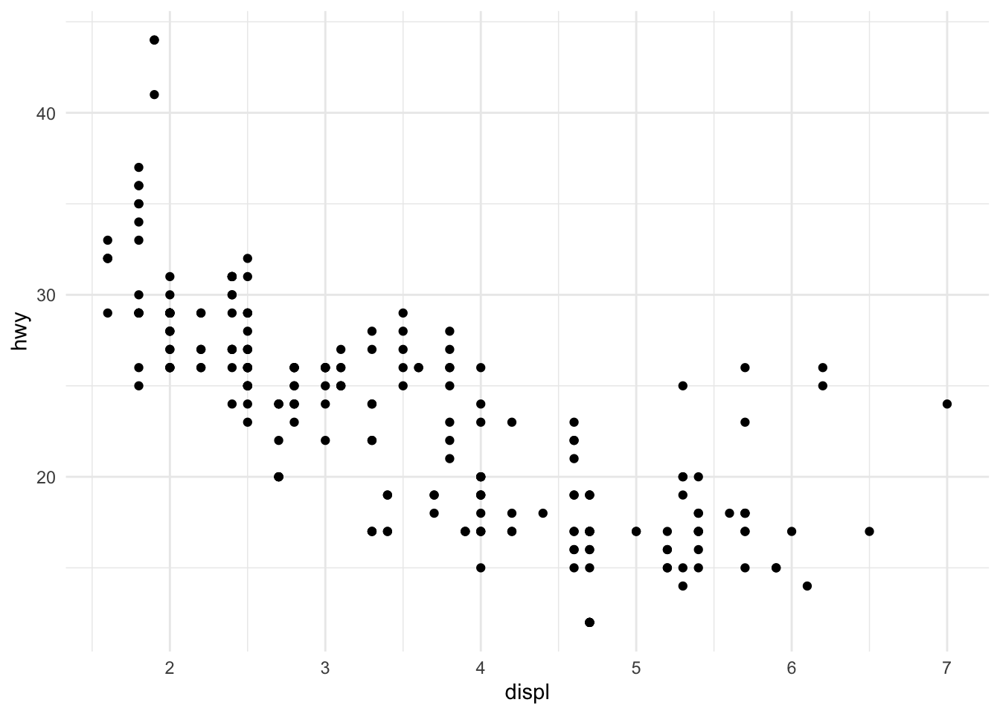
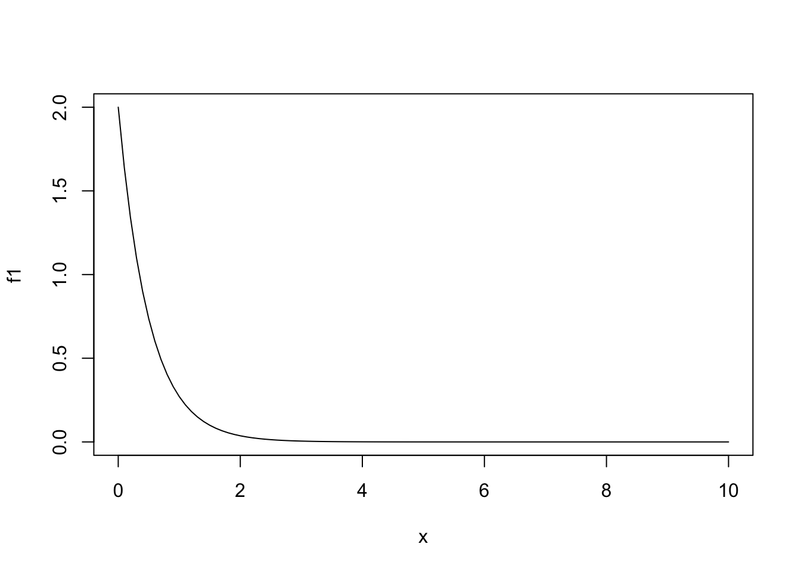
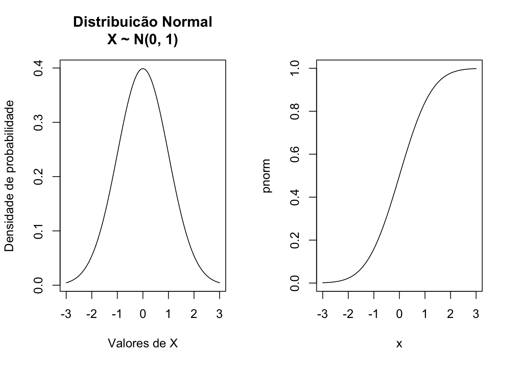

Capítulo 19 Probabilidade e Variáveis Aleatórias
Uma variável aleatória é uma função que atribui a cada resultado possível de um experimento aleatório um valor numérico. Em termos formais, é uma função que mapeia elementos de um espaço de resultados \(\Omega\) para o conjunto dos números reais \(\mathbb{R}\). Por exemplo, ao lançar um dado, podemos definir uma variável aleatória \(X\) que representa o número obtido na face superior, assumindo valores de 1 a 6.
As variáveis aleatórias são fundamentais na teoria das probabilidades, pois permitem quantificar e analisar matematicamente fenómenos aleatórios. Elas podem ser classificadas em dois tipos principais:
- Variáveis Aleatórias Discretas: assumem valores em um conjunto finito ou numerável, como o número de caras ao lançar uma moeda três vezes.
- Variáveis Aleatórias Contínuas: podem assumir qualquer valor em um intervalo contínuo, como a altura de uma pessoa medida em centímetros.
A compreensão das variáveis aleatórias é essencial para modelar situações incertas e calcular probabilidades associadas a diferentes eventos.
Exemplo 1: Em uma empresa, o número de reclamações recebidas por dia é uma variável aleatória discreta \(X\) com a seguinte função de probabilidade:
\[f_{X}(x) = P(X = x) = \begin{cases} 0.1, & x = 0 \\ 0.25, & x = 1 \\ 0.3, & x = 2 \\ 0.2, & x = 3 \\ 0.15, & x = 4 \end{cases}\]
Mostre que \(f_{X}\) é uma função massa de probabilidade (f.m.p.).
Calcule o número esperado de reclamações e a variância do número de reclamações por dia.
Calcule a probabilidade de haver mais de 2 reclamações em um dia.
Sabemos que para \(f_{X}\) ser uma f.m.p. ela deve satisfazer duas condições:
- \(f_{X}(x) \geq 0, \forall x\in \mathbb{R}\).
- \(\sum_{x}f_{X}(x)=1\).
# Função de probabilidade do número de reclamações (X)
X_valores <- c(0, 1, 2, 3, 4)
P_X <- c(0.1, 0.25, 0.3, 0.2, 0.15)
# a. Verificar se P(X) é uma função massa de probabilidade
sum(P_X) # Deve ser igual a 1
## [1] 1Sabemos que \(E(X)=\sum_{x}x\times f_{X}(x)\) e \(V(X) = \sum_{x}(x-E(X))^2\times f_{X}(x)\).
# b. Cálculo da média e variância do número de reclamações
E_X <- sum(X_valores * P_X) # Esperança
Var_X <- sum((X_valores - E_X)^2 * P_X) # Variância
print(E_X)
## [1] 2.05
print(Var_X)
## [1] 1.4475
# c. Probabilidade de haver mais de 2 reclamações em um dia
P_Y_maior_2 <- sum(P_X[X_valores > 2])
print(P_Y_maior_2)
## [1] 0.35Exemplo 2: Dada a função
\[f(x) = \begin{cases} 2e^{-2x},& \quad \text{se} \quad x\geq 0 \\ 0,& \quad \text{se} \quad x<0 \end{cases}\]
- Mostre que essa função é uma função densidade de probabilidade (f.d.p.).
- Calcule a probabilidade de que \(X>2\).
- Calcule a probabilidade de que \(0.3 < X < 0.7\).
Sabemos que para \(f\) ser f.d.p. ela deve satisfazer duas condições:
- \(f(x)\geq 0, \forall x \in \mathbb{R}\).
- \(\int_{-\infty}^{+\infty}f(x)\, dx = 1\).
Gráfico de \(f\):

Para verificar que o integral da função é igual a 1 podemos usar a função integrate(), que realiza a integração numérica.
Para fazer os cálculos pedidos nas alíneas (a) e (b) lembramos que a probabilidade é dada pela área sob a curva da função no intervalo pedido, ou seja,
\(P(X > 2) = \int_{2}^{+\infty}f(x)\, dx = \int_{2}^{+\infty} 2e^{-2x}\,dx\)
\(P(0.3 < X < 0.7) = \int_{0.3}^{0.7}f(x)\, dx = \int_{0.3}^{0.7} 2e^{-2x}\, dx\)
que são obtidas usando os comandos
integrate(f1, lower = 2, upper = Inf)
## 0.01831564 with absolute error < 2.8e-06
integrate(f1, lower = 0.3, upper = 0.7)
## 0.3022147 with absolute error < 3.4e-15Exemplo 3: A demanda diária de arroz em um supermercado, em centenas de quilos, é uma variável aleatória \(X\) com f.d.p. dada por
\[f(x) = \begin{cases} \frac{2}{3}x,& \quad \text{se} \quad 0\leq x <1 \\ -\frac{x}{3}+1,& \quad \text{se} \quad 1\leq x<3 \\ 0,& \quad \text{se} \quad x<0 \,\, \text{ou} \,\, x\geq 3 \end{cases}\]
- Calcular a probabilidade de que sejam vendidos mais que 150 kg.
- Calcular a venda esperada em 30 dias.
Vamos verificar que o integral da função é 1 e vamos fazer também o gráfico da função.

- Calcular a probabilidade de que sejam vendidos mais que 150 kg (1.5 centenas de quilos). Ou seja, queremos calcular \(P(X>1.5) = \int_{1.5}^{+\infty}f(x)\,dx\).

Podemos resolver o integral numericamente da seguinte forma
A venda esperada em trinta dias é 30 vezes o valor esperado de venda em um dia. Para calcular o valor esperado \(E(X) = \int_{-\infty}^{+\infty}xf(x)\,dx\) definimos uma nova função e resolvemos o integral. A função integrate() retorna uma lista onde um dos elementos (value) é o valor do integral.
Por fim, ressaltamos que os exemplos abordados aqui são básicos e podem ser resolvidos de forma analítica, sem a necessidade de métodos numéricos. Esses exemplos foram escolhidos apenas para ilustrar o uso do R na obtenção de soluções numéricas. Na prática, o R é mais indicado para problemas complexos, nos quais as soluções analíticas são difíceis ou inviáveis.
19.1 Exercícios
1. O número de produtos defeituosos em uma linha de produção ao final de cada hora é uma variável aleatória discreta \(X\) com a seguinte função de probabilidade:
\[P(X = x) = \begin{cases} \frac{1}{10}, & x = 0 \\ \frac{2}{10}, & x = 1 \\ \frac{3}{10}, & x = 2 \\ \frac{2}{10}, & x = 3 \\ \frac{2}{10}, & x = 4 \end{cases}\]
Verifique se \(P(X)\) é uma função massa de probabilidade.
Calcule o valor esperado e a variância do número de produtos defeituosos por hora.
Calcule a probabilidade de haver, no máximo, 2 produtos defeituosos em uma hora.
2. Uma pesquisa foi realizada em uma universidade sobre o número de cursos que cada aluno está matriculado. A variável aleatória \(Z\) representa o número de cursos e possui a seguinte função de probabilidade:
\[P(Z = z) = \begin{cases} 0.05, & z = 1 \\ 0.15, & z = 2 \\ 0.35, & z = 3 \\ 0.25, & z = 4 \\ 0.2, & z = 5 \end{cases}\]
Verifique se \(P(Z)\) é uma função massa de probabilidade.
Calcule o valor esperado e a variância do número de cursos em que os alunos estão matriculados.
Calcule a probabilidade de que um aluno esteja matriculado em mais de 3 cursos.
3. Em uma determinada localidade a distribuição de renda, em u.m. (unidade monetária) é uma variável aleatória \(X\) com função de distribuição de probabilidade:
\[ f_{X}(x) = \begin{cases} \frac{1}{10}x + \frac{1}{10}, & \text{se } 0 \leq x \leq 2 \\[10pt] -\frac{3}{40}x + \frac{9}{20}, & \text{se } 2 < x \leq 6 \\[10pt] 0, & \text{se } x < 0 \text{ ou } x > 6 \end{cases} \]
- Mostre que \(f(x)\) é uma função densidade de probabilidade.
- Qual a renda média nesta localidade?
- Calcule a probabilidade de encontrar uma pessoa com renda acima de 4.5 u.m. e indique o resultado no gráfico da distribuição.
4. Sabe-se que uma variável aleatória contínua \(X\) é distribuída uniformemente no intervalo 10 e 20.
- Apresente o gráfico da função densidade de probabilidade.
- Calcule \(P(X < 15)\).
- Calcule \(P(12\leq X \leq 18)\).
- Calcule \(E(X)\) e \(V(X)\).
5. O tempo de espera (em minutos) para ser atendido em um posto de atendimento ao cliente é uma variável aleatória contínua \(Y\) , cuja função de densidade de probabilidade é dada por:
\[ f_{Y}(y) = \begin{cases} 0.125y, & 0\leq y\leq 4 \\[10pt] 0,& \text{caso contrário} \end{cases} \] Com base nesta função de densidade, responda às seguintes questões:
Crie uma função para calcular a função de distribuição acumulada de \(Y\).
Calcule \(P(Y > 3)\), que representa a probabilidade de o tempo de espera ser superior a 3 minutos.
Calcule \(P(1 < Y < 3)\), que representa a probabilidade de o tempo de espera estar entre 1 e 3 minutos.
Calcule \(P(Y < 2)\), que representa a probabilidade de o tempo de espera ser inferior a 2 minutos.
Calcule \(P(Y < 3 \mid Y > 1)\) , que representa a probabilidade de o tempo de espera ser inferior a 3 minutos, dado que já passou mais de 1 minuto.
6. A duração, em anos, de uma certa lâmpada especial é uma variável aleatória contínua \(X\) com densidade dada por:
\[ f_{X}(x) = \begin{cases} 3\,e^{-3x}, & x\geq0 \\[10pt] 0,& x<0 \end{cases} \]
Crie uma função para calcular a função de distribuição acumulada de \(X\).
Calcule \(P(X>2)\).
Calcule \(P(0.5 < X <1.2)\).
Calcule \(P(X>3)\).
Calcule \(P(X<3 | X>1)\).